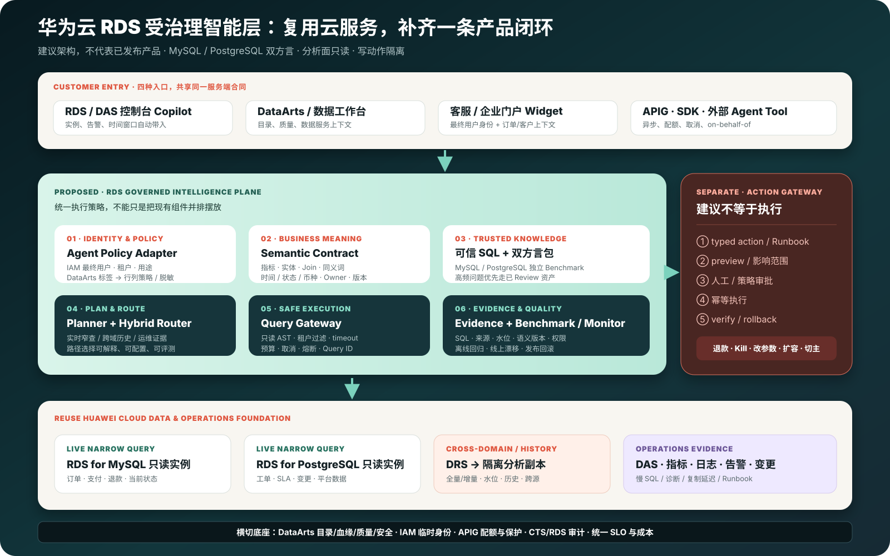
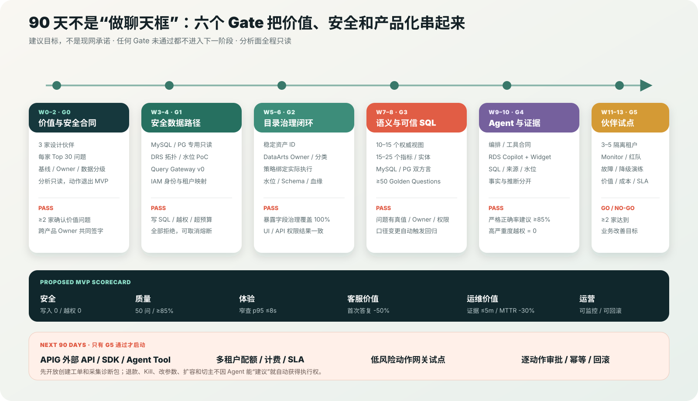

数据都在，答案散落
- 客服从 PostgreSQL 工单系统筛 P1
- 研发去 MySQL 只读实例写临时 SQL
- DBA 在 RDS、DAS、日志和变更系统找证据
- 群里拼截图，却无法确认口径和时间窗口
先讲故事，再讲组件
“海岚零售”是合成案例，不是真实客户背书；故事用于固定产品目标、演示问题与可测真值。
华南未解决 P1 工单涉及哪些订单？按“已批准退款”口径，总额多少？
10:00–10:20 哪些慢 SQL、变更、复制延迟和告警同时出现？
故事的真正价值：不是 AI 替代客服或 DBA，而是把现有云服务组织成一条可验证、可复用、可对外提供的客户工作流。
产品方向
方向代号“RDS 受治理智能层”是本研究建议，不是华为云现有产品名称或发布承诺。
目标架构
实时窄查走只读实例；跨域历史走 DRS 分析副本；运维诊断走 RDS/DAS/日志 API。三条路共享身份、语义、证据与评测。

单订单、当前状态、小结果；必须返回复制延迟并限制负载。
跨 MySQL/PG、长窗口、大聚合；必须处理水位、Schema 演进和失败。
路由可解释、可配置、可评测，不能由模型随意选择数据库。
客户场景
前三项可在只读边界内形成首批产品包；SaaS 内嵌和多租户运维价值高，但需要更成熟的身份、配额与隔离。
在 RDS/DAS 控制台把指标、慢 SQL、日志、告警、变更和 Runbook 组织成事故证据包。
目标：首个证据包 ≤5 分钟，MTTR -30%联查订单、退款、客户、工单与 SLA；给解释和建议，不直接退款或改订单。
目标：首次取数/答复时间 -50%运营与财务在本人权限下使用统一指标和可信 SQL，减少临时取数与口径争议。
目标：转研发率 -30%解释 Schema、生成受控只读查询并结合 DAS 诊断优化建议。
边界：不直接执行 DDL/DMLAPI、SDK、Widget 提供租户隔离的问数能力，避免每个 ISV 重建 NL2SQL 与审计。
前置：on-behalf-of + 配额 + SLA跨账号汇总容量、风险和事故模式，但绝不使用共享高权限账号。
前置：跨租户隔离和委托审计双引擎不是一个 Prompt
共享产品框架，但技术元数据、SQL 方言、权限、审计和性能基线分别建设与验收。
共同底线：Agent 不连接主写端点；两个方言包独立 Benchmark；支持矩阵、区域、版本、审计负载和 DRS 拓扑在 G1 实测。
90 天落地
Gate 是停止条件，不是汇报标题：没有安全路径，不做真实数据；没有语义真值，不发布 Agent；没有业务改善，不扩外部 API。

3 家伙伴、Top 30 问题、基线、Owner、分析只读。
双方只读、DRS PoC、Query Gateway；危险查询全拒绝。
资产、分类、策略与最终执行绑定；暴露字段覆盖 100%。
10–15 视图、15–25 指标、≥50 Golden Questions。
内嵌原型与 Widget；答案都带 SQL、来源和水位。
3–5 隔离租户；至少两家达到业务改善目标再继续。
建议目标，不是实测承诺
“回答很流畅”和“调用量很高”不能证明数据 Agent 可用；数字答案必须先验证结果与权限。
分析面生产写入、高严重度越权与敏感泄露
暴露字段有 Owner、分类、策略；回答展示新鲜度
≥50 个 Golden Questions 的 MVP 严格结果正确率
受控 SQL 执行成功率；失败有稳定错误契约
窄查询 p95；混合跨源建议目标 ≤30s
DBA MTTR；客服首次答复建议目标 -50%
内嵌 vs 外部 Agent
一套服务端 Capability Contract，三个入口做身份、语义、权限、结果一致性回归。
演示与完整材料
H1 是本页的华为云 RDS 专项中文有声录屏；D1 仍保留为通用云数据库能力全景。两者都是架构材料，不冒充华为云生产实调。
客户事故、复用/打通/新建、双引擎、六个 Gate、KPI、立项条件和证据边界。
华为云官方外部视频
领导演示先播 H1 讲完整方案，再按受众选择 1–2 个官方入口。官方视频说明现有 RDS 产品和操作路径；本文拟议的 Policy、Semantic、Query、Evidence、Eval 平面仍须按 90 天 Gate 建设和验收。
播放边界：外部页面内容、日期和 UI 可能更新；它们不能证明本方案新增的受治理智能层已经存在，也不能替代目标区域、版本、权限和负载的 G0/G1 实测。
官方事实底座
链接是当前公开资料；具体区域、版本、计费、白名单、负载和 SLA 必须在 G0/G1 核验。
当前完成的是公开资料核准、架构设计和执行计划；没有连接华为云 RDS 租户，没有做版本/区域/性能/成本实测，也没有真实客户数据。所有 KPI 均为试点建议目标。